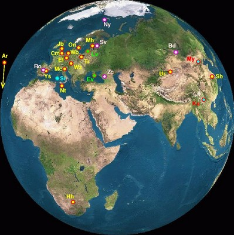

The European VLBI network, or EVN, is an array of radio-wavelength telescopes spread across Europe which also includes stations in far-East Asia (Urumqi and Shanghai), South Africa (Hartebeesthoek) and Puerto Rico (Arecibo). Owing to the number of telescopes with large dishes that participate in the network, it is the most sensitive VLBI array. It was formed in 1980 and the administering body now comprises 14 institutes.

The EVN has an open skies policy, which means it is open to all astronomers via a peer-review process. There are three observing periods per year. Data recorded at each station are shipped to the Joint Institute for VLBI in Europe (JIVE) in the Netherlands for correlation. The EVN also routinely joins other networks, such as the Very Long Baseline Array (VLBA) and the Multi-Element Radio-Linked Interferometer Network (MERLIN) to become a global VLBI array.